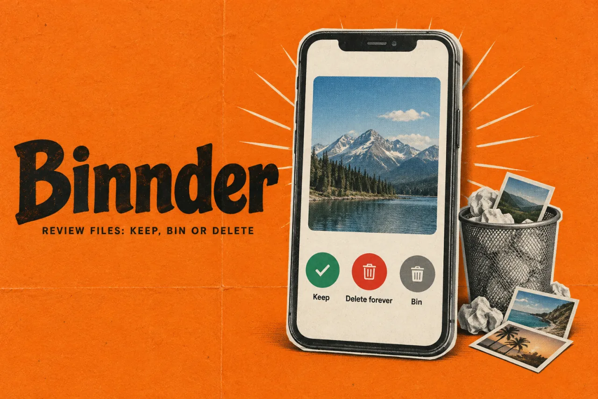
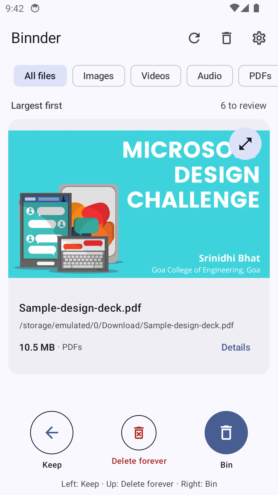
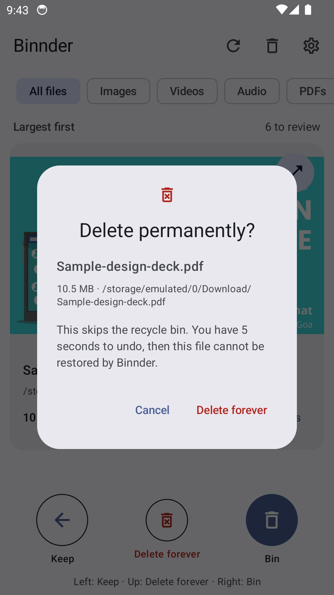

BinnderProduct story · 5 min read
Review the file. Keep a way back.
A native Android file-review app that combines large previews with explicit keep, bin and permanent-delete actions.
Read the case study

Native Android capture using a sample portfolio PDF in an isolated emulator. Fixed controls provide the same actions as swiping.
View full size ↗01 The problem
How can a quick review still make destructive actions clear?
Storage cleanup is easy to rush and difficult to undo. I wanted the file itself to be the main thing on screen, with a clear difference between keeping it, moving it to a bin and deleting it permanently. The interaction should make those consequences visible before a gesture becomes an operation.
Designed for Android user reviewing shared-storage files. Understand the file and the consequence before committing.
User context Design assumption
Working through a large-file queue and deciding what to keep.
- The friction
- Fast gestures can hide the difference between temporary and permanent removal.
- Design implication
- Keep previews and fixed controls visible, with clear recovery states.
Example situation · illustrative scenario. Imagine swiping through large downloads and realising that the last gesture targeted the wrong file. The interface needs to answer what happened and whether it can be reversed.
02 The direction
What shaped the design
Keep, bin and permanent deletion are different decisions. Their consequences need different feedback, not just different swipe directions.
Original project and interface captures · reviewed October 2026
My direction. I gave each action an explicit control and kept the file, consequence and recovery route close together.
Process and product scope
I put the largest files first and used a large preview with fixed actions. File-type filters help narrow the queue, while matching buttons and accessibility actions make swiping optional.
I separated reversible binning from permanent deletion. An upward swipe asks for confirmation, and every deletion action has a five-second Undo window before the operation begins. A kept file is hidden from review for seven days rather than treated as permanently resolved.
The bin reports its retention period and supports preview and restore. Moving a file there does not free storage, so the interface must not count those bytes as recovered space. The captures use sample portfolio files in a separate emulator, not a scan of someone’s phone.
- 5 seconds
- undo window
- 30 days
- bin retention
- 7 days
- before kept files return
- Inspect
Preview the largest remaining file and check its details.
- Decide
Keep it, bin it or confirm permanent deletion.
- Recover
Use Undo while pending or restore from the bin.
03 Design decisions
The choices behind Binnder
Open a decision to see the reasoning and trade-off.
01Keep the file visible while deciding
Use a large preview, file name, size and fixed Keep, Bin and Delete forever controls.
Why this matters. The decision should be about a recognisable file, not an unfamiliar path in a long list.
The trade-off. Some formats need another installed app. The preview must explain that limitation without implying a file is broken.
02Give permanent deletion its own commitment
Ask for confirmation and name the file before queuing permanent deletion, then offer the individual Undo window.
Why this matters. A gesture alone is too easy to misinterpret when the result cannot be recovered through the app.
The trade-off. Extra confirmation slows cleanup. It belongs to the more consequential action rather than every decision.
03Describe the bin honestly
Show retention and restoration separately from bytes actually deleted.
Why this matters. A recoverable file still occupies storage. The person needs to understand both recovery and capacity.
The trade-off. Retention depends on the device being able to run cleanup and reach the volume; it is not an exact deletion appointment.
04 The outcome
A review flow with an explicit recovery path.
I designed one-file-at-a-time review with visible alternatives to gestures, a recoverable bin and an explicit permanent-delete path. The native app also accounts for interrupted operations and changed files. I still need to check those recovery paths across Android devices and removable storage.

More about the experience
- Sample files. The images show an isolated test queue, not personal storage.
- Space accounting. Binned files remain on disk until permanently deleted.
05 Reflection
The recovery path is part of the cleanup flow.
I would test a mistaken swipe, a removed storage volume and a restore destination that already exists. A cleanup tool earns trust when it explains what happened and preserves a way to recover, especially when it cannot finish an operation.
What I would evaluate next proposed work
- review a small set of test files, undo an unintended action and restore a file without coaching.
- permission loss, app restart during a pending action, missing SD card and a file changed since scanning.
Find a sound you can adjust and keep.